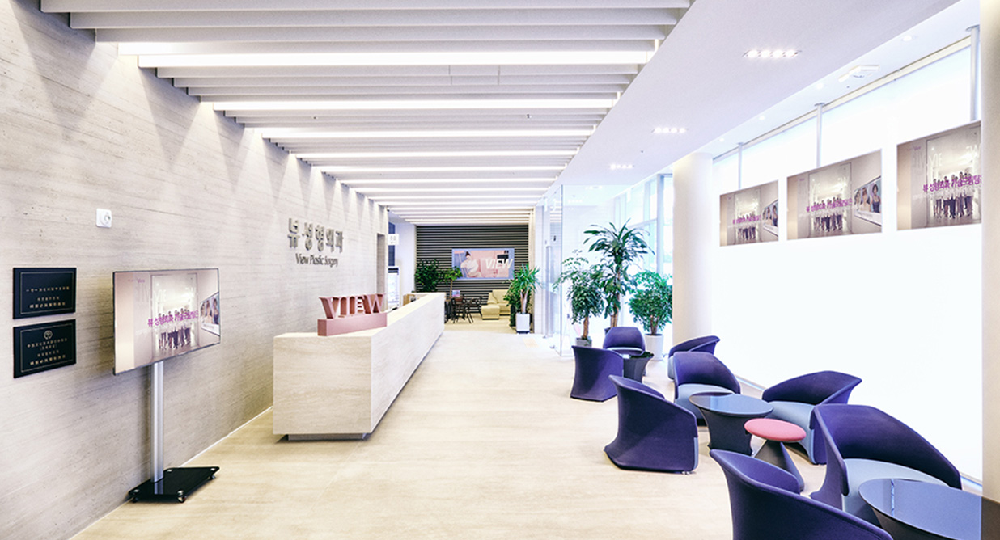

แนะนำ 6 โรงพยาบาลสำหรับศัลยกรรมที่เกาหลี เลือกให้ดีมีแต่ความปัง
สาวๆ หนุ่มๆ น่าจะรู้ดีว่าเมื่อพูดถึงเรื่องความสวยความงามเทรนด์ยอดฮิตอันดับต้นๆ หนึ่งในชื่อที่ได้ยินประจำคือการทำศัลยกรรมที่เกาหลี เพราะที่นี่มีดีเรื่องความสวยความงามหลายด้านโดยเฉพาะเรื่องการศัลยกรรมอย่างเป็นธรรมชาติ มีความละมุนอกละมุนใจ มองมุมไหนก็ดูดีไปหมด และแน่นอนว่าโรงพยาบาลในไทยก็มีความสามารถไม่แพ้กันแต่เพื่อการันตีความสวยแบบเกาหลีจะหนีพ้นประเทศแม่ได้ไงกัน เพราะงั้นวันนี้ Grandnewlife เอเจนซี่ศัลยกรรมเลยได้เลือก 6 โรงพยาบาลมาแนะนำ รับรองว่าการทำศัลยกรรมเกาหลีของคุณจะมีแต่ความปัง
-
ID Hospital โรงพยาบาลที่น่าจะคุ้นชื่อคุ้นตากันเป็นอย่างดี เพราะนอกจากเซเลบไทยก็เซเลบเกาหลีมากมายที่เคยเข้ารับการบริการ เพราะที่นี่เป็นโรงพยาบาลศัลยกรรมที่เกาหลีซึ่งมีนายแพทย์ปาร์ค ซังฮุน ศัลยแพทย์มากฝีมือที่สามารถศัลยกรรมออกมาได้ตรงใจคนไข้ และสามารถดึงเอกลักษณ์ของคนไข้ออกมาได้เป็นอย่างดี
-
Soulface21 หรือชื่อเดิม GYALUMHAN Surgery clinic โรงพยาบาลศัลยกรรมที่รวมศัลยแพทย์ผู้เชี่ยวชาญชื่อดังจากมหาวิทยาลัยโซลมากมาย ผ่านการผ่าตัดหลากหลายเคสที่ประสบความสำเร็จและส่งมอบผลลัพธ์ที่ตรงใจคนไข้
-
View Plastic Surgery ขึ้นชื่อเรื่องความปลอดภัยและมาตรฐานอันดับต้นในเกาหลี การทำศัลยกรรมที่เกาหลีทั้งทีต้องที่นี่เลย ที่นี่พร้อมให้บริการทุกรูปแบบด้วยเครื่องมือที่ทันสมัย ได้มาตรฐาน และมีความปลอดภัยสูง ไม่ว่าจะเป็นเรื่องการดูแลผิวพรรณ ศัลยกรรมใบหน้า หน้าอก หรือรูปร่างก็วางใจได้
-
Note Plastic Surgery โรงพยาบาลชื่อดังขึ้นชื่อเรื่องความเนียบ งานประณีต การดูแลใส่ใจที่ให้ความสำคัญแบบขั้นสุด อีกทั้งที่นี่ยังยืนยันความดีงานด้วยชื่อเสียงของศัลยแพทย์ชื่อดังอย่าง คิมฮักยอง ศัลยแพทย์ชื่อดังที่ได้รับการยอมรับจากเหล่าดาราศิลปินคนไทยมากมาย
-
EU Maxillofacial & Dental Center ที่นี่เป็นโรงพยาบาลศัลยกรรมที่มีความรู้เฉพาะทางมากพร้อมไปด้วยประสบการณ์มากกว่า 14 ปี แถมยังได้รับเลือกให้เป็นโรงพยาบาลที่ขึ่นชื่อเรื่องการนำเข้าเทคโนโลยีใหม่ๆ เรื่อยๆ และขึ้นชื่อเรื่องแก้ปัญหาโครงหน้า ใครที่กำลังมองหาโรงพยาบาลศัลยกรรมดีๆเพื่อแก้ไขปัญหาโครงหน้า ที่นี่พร้อมให้บริการอย่างแน่นอน
-
Banobagi Hospital โรงพยาบาลที่เป็นการรวมทีมของแพทย์ผิวหนังที่มีชื่อเสียงทั้งในไทยและเกาหลี ดูแลโดยทีมแพทย์ผู้เชี่ยวชาญด้วยเครื่องมือที่ทันสมัยมีความใส่ใจสูง ถ้าใครคุ้นๆชื่ออาจจะนึกถึงมาสก์ยี่ห้อดัง ซึ่งแน่นอนว่าเป็นมาสก์ที่ผลิตภายใต้ชื่อเดียวกันนี้เอง ดังนั้นหากพูดเรื่องการศัลยกรรมที่นี่ยืนหนึ่งอย่างแน่นอน

ศัลยกรรมจมูกที่เกาหลีเลือกโรงพยาบาลไหนดี ?
หนึ่งในศัลยกรรมอันดับต้นๆ ที่คนนิยมทำมากที่สุดคือการศัลยกรรมจมูก โดยในการทำศัลยกรรมจมูกที่เกาหลีนั้นสามารถทำได้กับทุกโรงพยาบาลตามทีได้กล่าวมาข้างต้น แต่ถ้าให้แนะนำเรื่องประสบการณ์และประสบการณ์ความเชี่ยวชาญ ขอแนะนำโรงพยาบาลตามนี้
-
AB Hospital โรงพยาบาลศัลยกรรมเอบี โรงพยาบาลนี้มีความปลอดภัยสูง ด้วยระบบการทำงานที่อยู่ภายใต้ความปลอดภัยสูงสุดในทุกขั้นตอนการดำเนินงาน ที่นี่ติดโพลเรื่องศัลยกรรมจมูกทรงสายฝอที่มีความละมุนอกละมุนใจ เป็นจมูกสายฝอที่มีความน่ารักปนเซ็กซี่ขี้เล่น ใครเป็นสายนี้ต้องโรงพยาบาลนี้เลย
-
View hospital โรงพยาบาลวิว จุดเด่นเรื่องการศัลยกรรมจมูกที่นี่คือจะไม่ยึดติดว่าต้องมีเทคนิคใดเฉพาะเจาะจงทั้งหมด เพราะทุกคนมีความต้องการเฉพาะและความแตกต่างที่ไม่เหมือนใคร ที่นี่จึงดำเนินการศัลยกรรมจมูกโดยพิจารณาตามรายบุคคลเป็นหลักทั้งยังเป็นขั้นตอนที่ทำโดยศัลยแพทย์ด้านจมูกโดยเฉพาะด้วย มั่นใจในผลลัพธ์และมาตรฐานได้อย่างแน่นอน
-
ID hospital โรงพยาบาลศัลยกรรมชื่อเสียงเด่นดังที่เราคุ้นหูกันดี ที่นี่ขึ้นชื่อเรื่องงานแก้จมูกให้ดีกว่าเดิม และขื้นชื่อเรื่องการศัลยกรรมจมูกที่เกาหลีที่ทรงสวย เป็นธรรมชาติ กรารดูแลหลังบริการดีเยี่ยม และมีราคาที่ค่อนข้างสมเหตุสมผล ใครที่กำลังมองหาโรงพยาบาลทำงานแก้ หรือเสริมให้ดีกว่าเดิม ที่นี่คือที่หนึ่งเรื่องนี้ ไว้ใจได้
ใช้บริการเอเจนซี่เพื่อการศัลยกรรมที่มีประสิทธิภาพ
ที่กล่าวมาทั้งหมดเราตั้งใจแนะนำและคัดสรรมาอย่างดีเพื่อการทำศัลยกรรมที่เกาหลีให้ผลลัพธ์ออกมาดีมีประสิทธิภาพ แต่การไปเกาหลีเองก็คงไม่ใช่เรื่องง่าย การเลือกใช้บริการกับเอเจนซี่พาไปศัลยกรรมคือทางออกที่คุ้มค่า เพราะไม่ว่าจะเป็นปัญหาเรื่องการจองที่พัก การดูแลหลังศัลยกรรมทั้งเรื่องอาหารการกินในช่วงพักฟื้น หรือจะอะไรก็ตามแต่เพียงแค่มีเอเจนซี่ดีๆ ชีวิตหลังศัลยกรรมจะง่ายขึ้นมาก
สุดท้ายนี่หวังว่าบทความนี้จะเป็นประโยชน์กับคนที่กำลังมองหาช่องทางการศัลยกรรมที่เกาหลีอย่าง มีประสิทธิภาพไม่มากก็น้อย